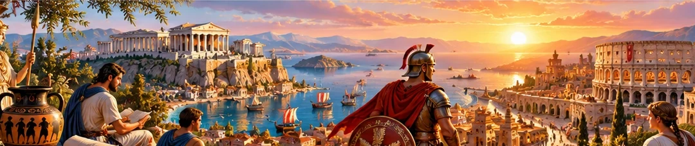

Параграфи розділу
Поняття Античності. Природні умови Давньої Греції
Античність, періодизація Давньої Греції, гори, моря, острови, господарство та харчування.
Мінойська та Мікенська палацові цивілізації
Крит і Кносс, палацова культура, море й торгівля, Мікени, ахейці, дорійці та «темні віки».
Полісний устрій Давньої Греції
Поліси, агора, акрополь і хора, громадяни та негромадяни, повсякденне життя й освіта.
Спарта — «держава-військовий табір»
Спартіати, періеки й ілоти, закони Лікурга, апела, герусія, ефори та причини занепаду Спарти.
Персько-грецькі війни
Причини конфлікту, Марафон, Фермопіли, Саламін, Платеї та Каліїв мир.
Афінська демократія
Солон, Пісістрат, Клісфен, остракізм, Перікл та органи влади Афін.
Релігія та культура
Олімпійські боги й герої, Дельфійський оракул, містерії та Олімпійські ігри.
Мистецтво Давньої Греції
Філософи й наукові знання, архітектурні ордери, скульптура, вазопис і давньогрецький театр.
Велика грецька колонізація. Античні держави на теренах України
Причини колонізації, контакти зі скіфами, поліси Північного Причорномор’я, Боспорське та Понтійське царства.
Пелопоннеські війни. «Східний похід» Александра Македонського
Суперництво Афін і Спарти, Македонія Філіпа II, Херонея та похід Александра проти Персії.
Еллінізм
Діадохи й елліністичні держави, культурний обмін, койне, бібліотеки, мистецтво та наука.
Природні умови Апеннінського півострова. Заснування Рима
Альпи, Апенніни, Тибр, легенда про Ромула і Рема, вигідне розташування Рима та вплив етрусків.
Найдавніша історія Риму
Рекси, сенат і народні збори, перехід до республіки, магістрати, консули та диктатор.
Суспільний устрій Риму
Громадяни й негромадяни, патриції та плебеї, раби й вільновідпущені, народні трибуни, вето та Закони XII таблиць.
Повсякденне життя Риму за часів республіки
Римська сім’я, система імен, інсули й домуси, харчування, акведуки та міська повсякденність.
Римські завоювання
Розширення Риму, три Пунічні війни, Ганнібал, провінції, легіони та реформи Гая Марія.
Криза республіканського устрою та виникнення імперії
Соціальна криза, міжусобні війни, тріумвірати, Юлій Цезар, Октавіан Август і перехід до принципату.
Римська імперія
«П’ять добрих імператорів», провінції й громадянство, Адріанів вал, управління величезною державою та романізація.
Релігія давніх римлян
Римські боги, авгури й весталки, Сатурналії, домашні духи, культ імператора та повсякденні вірування.
Мистецтво Риму доби імперії
Римський портрет, мозаїки й скло, арки та куполи, Колізей, дороги, ораторство і «золотий вік» латинської літератури.
Повсякденне життя в Римській імперії
Провінційні товари, роздачі, вілли й бенкети, цирки, амфітеатри, Колізей і політика «хліба та видовищ».
Варвари
Лімес і прикордоння, кельти й друїди, сармати Причорномор’я, германські племена, руни та взаємний вплив із Римом.
Виникнення та поширення християнства. Кризові явища в Римській імперії
Ранні християнські громади, переслідування й едикти, криза III ст., колони, Діоклетіан, домінат, Константин і Нікейський собор.
Велике переселення народів. Падіння Західної Римської імперії
Гуни й готи, федерати, Адріанополь, Аларіх і Аттіла, поділ 395 р., пограбування Рима та падіння Західної імперії у 476 р.
Слов’яни
Венеди та археологічні культури, анти й склавини, Велике розселення слов’ян, господарство та релігійні уявлення.
Античний світ: від Греції та Риму до ранніх слов’ян
Повтори шлях від грецьких полісів і римської держави до Великого переселення народів та ранніх слов’ян. Історичні карти, схеми, інтерактивні вправи та перевірки знань допоможуть краще зрозуміти й узагальнити матеріал.
